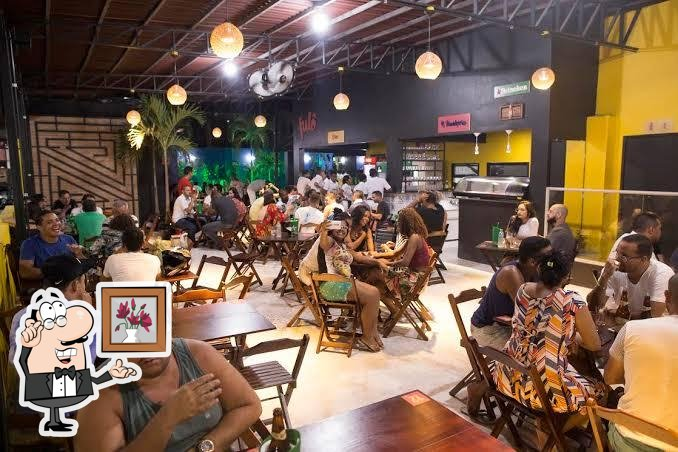
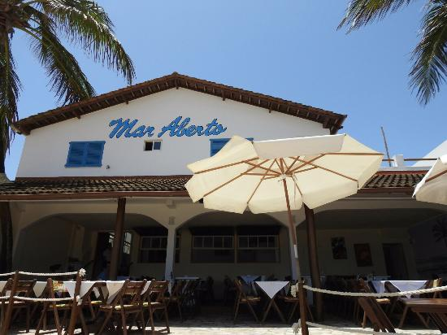
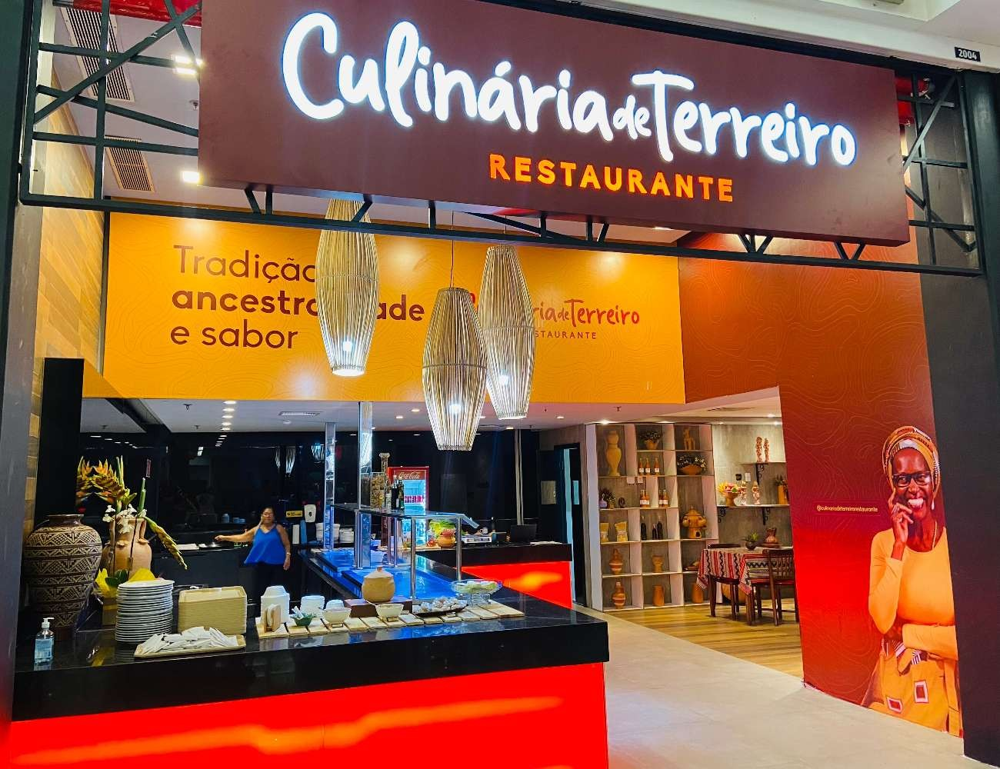

Recomendações com base em suas escolhas

Fulô
Horário de funcionamento: 12:00
Localização: R. Nova Camaçari, 55-109 - Bela Vista
Telefone: 071999145464
O restaurante aposta em porções clássicas com um toque da casa. O Torresmo Premium (acompanhado de geleia de pimenta Fulô) e os Dadinhos de Tapioca são muito bem avaliados. Outro destaque são os Finórios, que são pastéis mistos com recheios como carne seca cremosa e moqueca de camarão, além do trio de bolinhos que inclui sabores de feijoada e porco na lata.

Mar Aberto
Horário de funcionamento: 09:50
Localização: Largo São Francisco - R. Direta de Arembepe, 44 - Abrantes
Telefone: 071991344410
O cardápio do Mar Aberto no Google Maps reflete uma culinária que valoriza profundamente o frescor do litoral baiano, destacando-se por pratos de frutos do mar que servem bem duas ou mais pessoas. As famosas moquecas e mariscadas são os itens mais comentados.

Culinária de Terreiro
Horário de funcionamento: 11:40
Localização: Boulevard Shopping - Camaçari BA
Telefone: 071996608308
O Culinária de Terreiro oferece pratos e quitandas tradicionais da Bahia, feitos com ingredientes da própria terra, como farinha, beiju e derivados da mandioca produzidos na casa de farinha da comunidade.
Avaliações anteriores
Ambiente agradável, comida gostosa e música boa. Super recomendo.
🌳🌳🌳🌳Ambiente agradável, equipe gentil porém a comida chegou fria.
🌳🌳